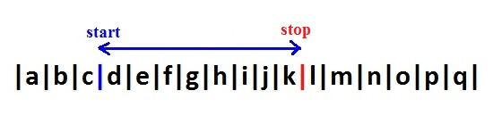

Slice
Slice: hoạt động như substring() nhưng có một số hành vi khác nhau.
Cấu trúc: string.slice(start[, stop]);
- Nếu giá trị kết thúc (stop) được bỏ qua cũng như hàm substring() sẽ tính từ vị trí bắt đầu đến cuối chuỗi.
- Nếu start > stop, slice() sẽ không trao đổi 2 đối số. (Được con là điều kiện sai, trả về chuỗi rỗng)
- Nếu start là số âm (<0), slice() sẽ thiết vị trí đếm từ cuối chuỗi, giống như substr(). Trong trường hợp đếm từ cuối chuỗi nhưng vị trí bắt đầu vẫn vượt vị trí kết thúc trong chuỗi nó sẽ giống như trường hợp start > stop.
VD:
var str="abcdefghijklmnopq"; document.write(str.slice(-10,8)); Tính từ vị trí thứ 10 đếm ngược từ cuối chuỗi đến vị trí thứ 8 đếm từ đầu chuỗi. Kết quả: "h"
- Nếu stop là âm, thì vị trí kết thúc cũng sẽ được tính từ cuối chuỗi đếm ngược lại.
document.write(str.slice(-10,-7)); Tính từ vị trí thứ 10 đếm ngược từ cuối chuỗi đến vị trí thứ 8 đếm ngược từ cuối chuỗi. Kết quả: "hij"
Chú ý khi sử dụng slice() bạn có thể cho giá trị dương hoặc âm (tức là đếm từ đầu hoặc cuối chuỗi) nhưng vị trí bắt đầu không được vượt quá vị trí kết thúc, nếu không sẽ được coi là sai.
Substring
Cấu trúc: string.substring(start[, stop]);
- strart: vị trí bắt đầu
- stop: vị trí kết thúc

VD:
var str="abcdefghijklmnopq";
document.write(str.substring(0,3)); //Lấy từ đầu chuỗi đến vị trí tứ 3. Kết quả: "abc"
document.write(str.substring(3,8)); //Lấy từ vị trí thứ 3 đến vị trí thứ 8. Kết quả: "defgh"
Substr
Cấu trúc: string.substr(start[, length]);
- start: là vị trí bắt đầu
- length: là độ dài chuỗi con cần lấy tính từ vị trí bắt đầu

VD1:
document.write(str.substr(0,3)); //Từ đầu chuỗi lấy thêm 3 ký tự. Kết quả: "abc"
document.write(str.substr(3,5)); //Từ vị trí thứ 3 lấy thêm 5 ký tự. Kết quả: "defgh"
document.write(str.substr(-10,4)); //từ vị trí thứ 10 tính từ cuối chuỗi lấy thêm 4 ký tự. Kết quả: "hijk"
document.write(str.substr(3)); //Tính từ vị trí thứ 3 đến cuối chuỗi. Kết quả: "defghijklmnopq"
document.write(str.substr(-5)); //Tính từ vị trí thứ 5 (đếm từ cuối chuỗi) đến cuối chuỗi. Kết quả: "mnopq"